Production Analysis
Data analysis
Setup and data preparation
ons_poa is coded once here as a factor with
levels/labels c("p", "t", "k"), and coda_vc
once as a factor with levels c(0, 1). Every plot, model,
and prediction grid in the rest of this document inherits this coding
and reference level (/p/), rather than each section
re-deriving place-of-articulation labels independently.
library(ggplot2)
library(tidyverse)
library(dplyr)
library(ggridges)
library(lme4)
library(brms)
library(marginaleffects)data <- read.csv("/Users/chandan/Desktop/GitHub/Burst_voice/Data/data_12-11-24.csv",
header = TRUE)
data <- data %>%
mutate(
ons_poa = factor(ons_poa, levels = c(1, 2, 3), labels = c("p", "t", "k")),
coda_vc = factor(coda_vc, levels = c(0, 1)),
vot_ratio = vot / vdur,
CVdur = vot + vdur
)
# single data frame used throughout; kept as a separate name only
# for readability in code carried over from earlier drafts
data_mod <- data
number_of_subs <- length(unique(data$sub))
number_of_subs## [1] 20Preliminary plotting
By onset POA
This is a first pass at looking at the data.
# Within-condition consistency (coefficient of variation) check
consistency_stats <- data %>%
group_by(sub, ons_poa, coda_vc, vowel) %>%
summarise(
n_obs = n(),
mean_CVdur = mean(CVdur, na.rm = TRUE),
sd_CVdur = sd(CVdur, na.rm = TRUE),
cv = sd_CVdur / mean_CVdur * 100,
.groups = "drop"
) %>%
filter(n_obs > 1)
consistency_stats %>%
arrange(desc(cv)) %>%
head(20)## # A tibble: 20 × 8
## sub ons_poa coda_vc vowel n_obs mean_CVdur sd_CVdur cv
## <int> <fct> <fct> <chr> <int> <dbl> <dbl> <dbl>
## 1 18 p 1 uh 4 0.192 0.0651 33.9
## 2 6 p 1 aw 4 0.295 0.0881 29.9
## 3 6 k 1 ae 4 0.258 0.0755 29.2
## 4 10 p 1 ih 2 0.231 0.0672 29.0
## 5 17 k 0 uh 4 0.181 0.0518 28.6
## 6 16 p 1 eh 4 0.243 0.0681 28.0
## 7 18 p 0 ih 4 0.147 0.0382 26.1
## 8 11 p 0 ih 4 0.199 0.0505 25.4
## 9 6 t 0 ih 2 0.101 0.0255 25.2
## 10 6 k 0 ae 6 0.160 0.0395 24.7
## 11 18 t 0 ih 2 0.127 0.0311 24.5
## 12 19 p 0 uh 6 0.274 0.0650 23.7
## 13 6 k 0 aw 4 0.151 0.0354 23.4
## 14 10 p 0 ih 4 0.154 0.0360 23.4
## 15 17 k 1 eh 2 0.207 0.0481 23.2
## 16 11 t 0 aw 6 0.243 0.0560 23.0
## 17 18 k 0 uh 4 0.176 0.0404 22.9
## 18 1 t 0 ae 6 0.248 0.0542 21.9
## 19 8 t 0 ih 2 0.140 0.0304 21.8
## 20 18 t 0 uh 6 0.162 0.0346 21.4# Summary table of mean VOT by place and coda voicing
summary_table <- data %>%
group_by(ons_poa, coda_vc) %>%
summarize(
mean_vot = mean(vot, na.rm = TRUE),
vot_range = paste0(min(vot, na.rm = TRUE), " to ", max(vot, na.rm = TRUE))
) %>%
ungroup()
print(summary_table)## # A tibble: 6 × 4
## ons_poa coda_vc mean_vot vot_range
## <fct> <fct> <dbl> <chr>
## 1 p 0 0.0787 0.024 to 0.199
## 2 p 1 0.0908 0.034 to 0.234
## 3 t 0 0.0894 0.031 to 0.21
## 4 t 1 0.0971 0.034 to 0.2
## 5 k 0 0.0925 0.045 to 0.219
## 6 k 1 0.100 0.051 to 0.225# Boxplot: VOT by onset POA and coda voicing
plot_overall <- ggplot(data, aes(x = ons_poa, y = vot, fill = coda_vc)) +
geom_boxplot(notch = TRUE, outlier.shape = NA) +
theme(axis.text.x = element_blank()) +
labs(x = NULL, y = "CV duration (s)") +
facet_wrap(~ons_poa, scales = "free") +
scale_y_continuous(limits = c(0.015, 0.18)) +
scale_fill_discrete(name = "Coda voice", labels = c("-vc", "+vc"))
print(plot_overall)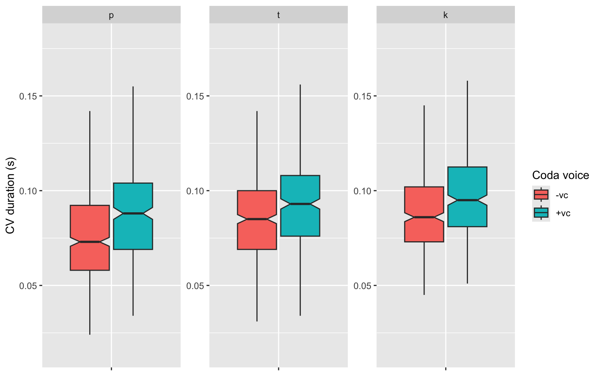
plot_overall + facet_wrap(~sub)
# Boxplot: CV duration by onset POA and coda voicing
plot_overall_CVdur <- ggplot(data, aes(x = ons_poa, y = CVdur, fill = coda_vc)) +
geom_boxplot(notch = TRUE, outlier.shape = NA) +
theme(axis.text.x = element_blank()) +
labs(x = NULL, y = "CV duration (s)") +
facet_wrap(~ons_poa, scales = "free") +
scale_fill_discrete(name = "Coda voice", labels = c("-vc", "+vc"))
print(plot_overall_CVdur)
# Boxplot: VOT by onset POA, faceted by subject
plot_vot_poa <- ggplot(data, aes(x = vot, y = ons_poa, fill = coda_vc)) +
geom_boxplot(notch = TRUE, outlier.shape = NA, width = 0.5) +
theme_minimal() +
labs(x = "VOT(s)", y = "Onset POA", fill = "Coda voice") +
scale_fill_discrete(labels = c("[-vc]", "[+vc]"))
print(plot_vot_poa + facet_wrap(~sub))
# Boxplot: vowel duration by onset POA, faceted by subject
plot_vdur_poa <- ggplot(data, aes(x = vdur, y = ons_poa, fill = coda_vc)) +
geom_boxplot(notch = TRUE, outlier.shape = NA, width = 0.5) +
theme_minimal() +
labs(x = "Vdur(s)", y = "Onset POA", fill = "Coda voice") +
scale_x_continuous(limits = c(0, 0.3), expand = c(0, 0)) +
scale_fill_discrete(labels = c("[-vc]", "[+vc]"))
plot_vdur_poa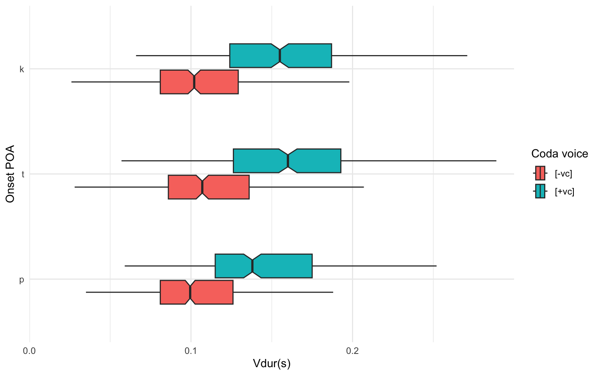
plot_vdur_poa + facet_wrap(~sub)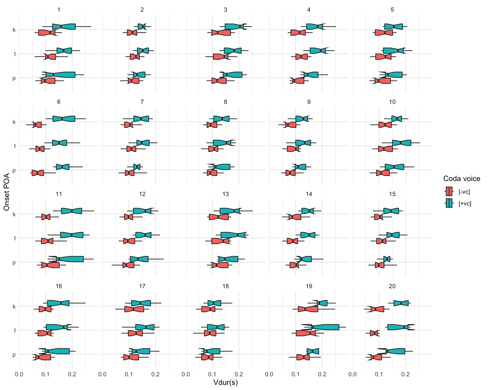
By onset POA and vowel
Ridge plots (stacked density plots) for voiceless and voiced coda tokens by POA and vowel.
plot_vowel <- ggplot(data, aes(x = vowel, y = vot, fill = coda_vc)) +
geom_boxplot(notch = TRUE) +
labs(y = "VOT(s)", x = "Vowel", fill = "Coda voicing") +
facet_wrap(~ons_poa, scale = "free")
plot_vowel
# ons_poa is already factor-coded p/t/k, so these labellers map from
# that coding to display symbols only
poa_labels <- c("p" = "[p\u02b0]", "t" = "[t\u02b0]", "k" = "[k\u02b0]")
vowel_labels <- c("ae" = "\u00e6", "aw" = "\u0254", "eh" = "\u025b",
"ih" = "\u026a", "uh" = "\u028c")plot_vowel_ridges <- ggplot(data, aes(x = vot, y = coda_vc, fill = coda_vc)) +
geom_density_ridges(alpha = 0.7) +
scale_x_continuous(breaks = c(0, 0.1, 0.2), limits = c(0, NA)) +
scale_y_discrete(labels = c("0" = "Voiceless", "1" = "Voiced")) +
scale_fill_manual(
name = "Coda",
values = c("0" = "#F8766D", "1" = "#00BFC4"),
labels = c("0" = "Voiceless", "1" = "Voiced")
) +
labs(x = "VOT(s)", y = "") +
facet_grid(vowel ~ ons_poa, scales = "free_x",
labeller = labeller(ons_poa = poa_labels, vowel = vowel_labels)) +
theme_ridges() +
theme(axis.text.y = element_blank(),
axis.title.x = element_text(hjust = 0.5),
strip.text = element_text(margin = margin(t = 4, b = 4)),
strip.text.x = element_text(margin = margin(t = 3, b = 4)),
strip.text.y = element_text(margin = margin(l = 3, r = 3)),
panel.spacing = unit(0.3, "cm"))
print(plot_vowel_ridges)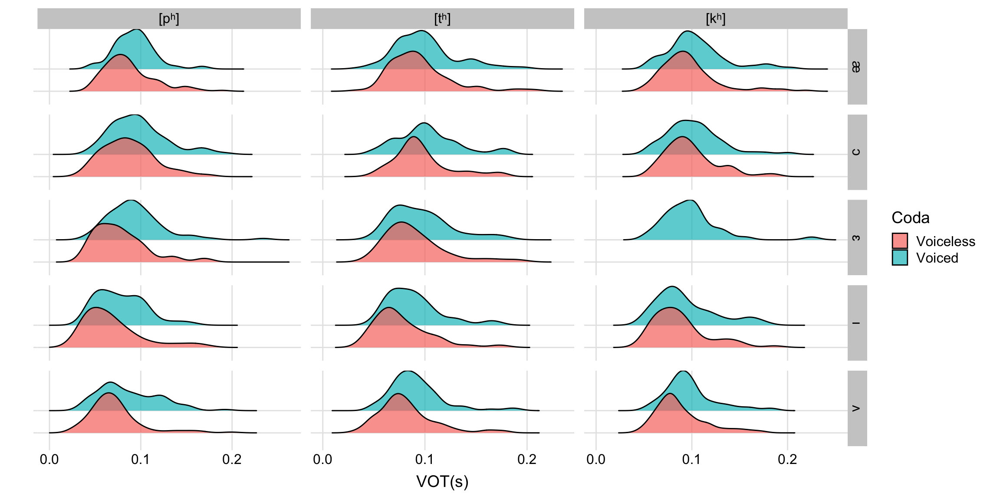
ggsave("plot_ridges.png", plot = plot_vowel_ridges, width = 12, height = 6, dpi = 300)# Same ridge plot, collapsed across vowel
plot_ridges <- ggplot(data, aes(x = vot, y = coda_vc, fill = coda_vc)) +
geom_density_ridges(alpha = 0.7) +
scale_x_continuous(breaks = c(0, 0.05, 0.1, 0.15, 0.2), limits = c(0, NA)) +
scale_y_discrete(labels = c("0" = "Voiceless", "1" = "Voiced"), expand = c(0, 0)) +
scale_fill_manual(
name = "Coda",
values = c("0" = "#F8766D", "1" = "#00BFC4"),
labels = c("0" = "Voiceless", "1" = "Voiced")
) +
labs(x = "VOT(s)", y = "") +
facet_wrap(~ons_poa, scales = "free_x",
labeller = labeller(ons_poa = poa_labels)) +
theme_ridges() +
theme(axis.text.y = element_blank(),
axis.title.x = element_text(hjust = 0.5),
strip.text = element_text(margin = margin(t = 4, b = 4)),
strip.text.x = element_text(margin = margin(t = 3, b = 4)),
panel.spacing = unit(0.3, "cm"),
legend.position = c(0.85, 0.85),
legend.background = element_rect(fill = "white", color = "black", linewidth = 0.3),
legend.margin = margin(t = 5, r = 5, b = 5, l = 5),
legend.title = element_text(size = 12),
legend.text = element_text(size = 10))
plot_ridges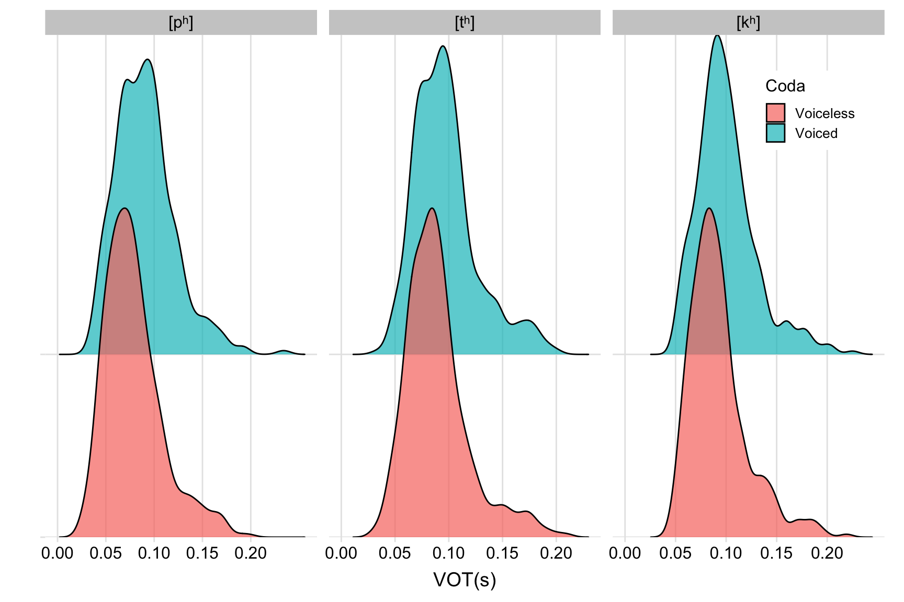
# Overlapping density plots by POA and vowel
plot_vowel_density <- ggplot(data, aes(x = vot, fill = coda_vc)) +
geom_density(alpha = 0.6) +
labs(x = "VOT(s)", y = "Density", fill = "Coda voicing") +
facet_wrap(~ons_poa + vowel, scales = "free")
plot_vowel_density
It looks like there is a clear effect of coda voicing on voiceless onset VOT.
Basic models
model_full <- lmer(vot ~ ons_poa * coda_vc * vowel + (1 | sub), data = data_mod)
summary(model_full)## Linear mixed model fit by REML ['lmerMod']
## Formula: vot ~ ons_poa * coda_vc * vowel + (1 | sub)
## Data: data_mod
##
## REML criterion at convergence: -12090.5
##
## Scaled residuals:
## Min 1Q Median 3Q Max
## -3.9687 -0.6449 -0.0587 0.5369 5.7763
##
## Random effects:
## Groups Name Variance Std.Dev.
## sub (Intercept) 0.0005508 0.02347
## Residual 0.0003030 0.01741
## Number of obs: 2369, groups: sub, 20
##
## Fixed effects:
## Estimate Std. Error t value
## (Intercept) 0.0866983 0.0054935 15.782
## ons_poat 0.0073062 0.0022907 3.190
## ons_poak 0.0096769 0.0022857 4.234
## coda_vc1 0.0063179 0.0032255 1.959
## vowelaw -0.0001351 0.0022857 -0.059
## voweleh -0.0092376 0.0022906 -4.033
## vowelih -0.0181821 0.0025533 -7.121
## voweluh -0.0156945 0.0022906 -6.852
## ons_poat:coda_vc1 -0.0001011 0.0039504 -0.026
## ons_poak:coda_vc1 0.0018488 0.0041083 0.450
## ons_poat:vowelaw 0.0025489 0.0032324 0.789
## ons_poak:vowelaw 0.0023274 0.0034203 0.680
## ons_poat:voweleh 0.0050185 0.0039532 1.269
## ons_poak:voweleh -0.0066410 0.0048277 -1.376
## ons_poat:vowelih 0.0018091 0.0041110 0.440
## ons_poak:vowelih 0.0092639 0.0034236 2.706
## ons_poat:voweluh 0.0035997 0.0032358 1.112
## ons_poak:voweluh 0.0074510 0.0034236 2.176
## coda_vc1:vowelaw 0.0043530 0.0041083 1.060
## coda_vc1:voweleh 0.0097376 0.0041110 2.369
## coda_vc1:vowelih 0.0032590 0.0046965 0.694
## coda_vc1:voweluh 0.0095407 0.0041110 2.321
## ons_poat:coda_vc1:vowelaw -0.0039976 0.0053456 -0.748
## ons_poak:coda_vc1:vowelaw -0.0093687 0.0054634 -1.715
## ons_poat:coda_vc1:voweleh -0.0095698 0.0061351 -1.560
## ons_poat:coda_vc1:vowelih 0.0019088 0.0065419 0.292
## ons_poak:coda_vc1:vowelih -0.0050716 0.0062380 -0.813
## ons_poat:coda_vc1:voweluh -0.0066254 0.0053477 -1.239
## ons_poak:coda_vc1:voweluh -0.0080678 0.0055851 -1.445## fit warnings:
## fixed-effect model matrix is rank deficient so dropping 1 column / coefficientRemoving the vowel term (reference level /p/, matching
the ons_poa factor coding set above – no re-recoding needed
here):
model <- lmer(vot ~ ons_poa * coda_vc + (1 | sub), data = data_mod)
summary(model)## Linear mixed model fit by REML ['lmerMod']
## Formula: vot ~ ons_poa * coda_vc + (1 | sub)
## Data: data_mod
##
## REML criterion at convergence: -12060.8
##
## Scaled residuals:
## Min 1Q Median 3Q Max
## -3.5089 -0.6534 -0.0630 0.5446 5.6375
##
## Random effects:
## Groups Name Variance Std.Dev.
## sub (Intercept) 0.0005506 0.02346
## Residual 0.0003357 0.01832
## Number of obs: 2369, groups: sub, 20
##
## Fixed effects:
## Estimate Std. Error t value
## (Intercept) 0.078715 0.005306 14.836
## ons_poat 0.010766 0.001186 9.074
## ons_poak 0.013786 0.001218 11.323
## coda_vc1 0.012075 0.001302 9.274
## ons_poat:coda_vc1 -0.004456 0.001855 -2.403
## ons_poak:coda_vc1 -0.004354 0.001876 -2.320
##
## Correlation of Fixed Effects:
## (Intr) ons_pt ons_pk cd_vc1 ons_pt:_1
## ons_poat -0.098
## ons_poak -0.096 0.429
## coda_vc1 -0.090 0.401 0.391
## ons_pt:cd_1 0.063 -0.640 -0.274 -0.702
## ons_pk:cd_1 0.062 -0.278 -0.649 -0.694 0.487Plot of the model
p_lmer <- ggplot(data_mod, aes(x = vdur, y = vot, color = coda_vc)) +
geom_point() +
geom_smooth(method = lm) +
xlab("Vowel dur (ms)") + ylab("VOT (ms)")
p_lmer + facet_wrap(~ons_poa)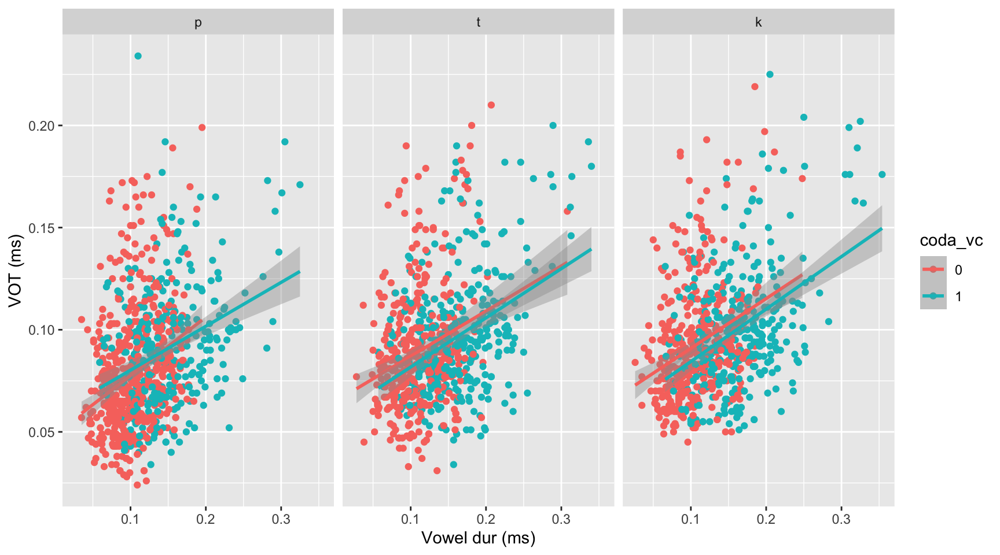
GLMM: predicting coda voicing from onset VOT and POA
model_coda <- glmer(
coda_vc ~ vot * ons_poa + (1 | sub),
data = data,
family = binomial(link = "logit")
)
summary(model_coda)## Generalized linear mixed model fit by maximum likelihood (Laplace
## Approximation) [glmerMod]
## Family: binomial ( logit )
## Formula: coda_vc ~ vot * ons_poa + (1 | sub)
## Data: data
##
## AIC BIC logLik -2*log(L) df.resid
## 3147.5 3187.9 -1566.7 3133.5 2362
##
## Scaled residuals:
## Min 1Q Median 3Q Max
## -2.3339 -0.8486 -0.6116 1.0500 2.0659
##
## Random effects:
## Groups Name Variance Std.Dev.
## sub (Intercept) 0.2431 0.493
## Number of obs: 2369, groups: sub, 20
##
## Fixed effects:
## Estimate Std. Error z value Pr(>|z|)
## (Intercept) -2.6659 0.3108 -8.577 < 2e-16 ***
## vot 25.0800 3.3078 7.582 3.4e-14 ***
## ons_poat 0.4985 0.3325 1.499 0.134
## ons_poak 0.4242 0.3477 1.220 0.222
## vot:ons_poat -3.8848 3.5206 -1.103 0.270
## vot:ons_poak -2.8918 3.6124 -0.801 0.423
## ---
## Signif. codes: 0 '***' 0.001 '**' 0.01 '*' 0.05 '.' 0.1 ' ' 1
##
## Correlation of Fixed Effects:
## (Intr) vot ons_pt ons_pk vt:ns_pt
## vot -0.905
## ons_poat -0.428 0.414
## ons_poak -0.386 0.370 0.431
## vot:ons_pot 0.456 -0.503 -0.947 -0.419
## vot:ons_pok 0.432 -0.476 -0.428 -0.949 0.471# Predictions across a range of VOT values, for each POA
vot_range <- seq(from = 0, to = 0.25, by = 0.005)
sub_ref <- unique(data$sub)[1]
plot_data <- expand_grid(
vot = vot_range,
ons_poa = levels(data$ons_poa), # already "p", "t", "k", in that order
sub = sub_ref
)
plot_data$ons_poa <- factor(plot_data$ons_poa, levels = levels(data$ons_poa))
plot_data$coda_vc <- NA
plot_data$predicted_prob <- predict(model_coda, newdata = plot_data,
type = "response", re.form = ~(1 | sub))
vc_pred <- ggplot(plot_data, aes(x = vot, y = predicted_prob, color = ons_poa)) +
geom_line(linewidth = 2) +
labs(
title = "",
x = "VOT (s)",
y = "Predicted Probability of Voiced Coda",
color = "Onset POA"
) +
theme_minimal() +
theme(
plot.title = element_text(hjust = 0.5, size = 16),
axis.title = element_text(size = 14),
legend.title = element_text(size = 12),
legend.text = element_text(size = 10)
)
vc_pred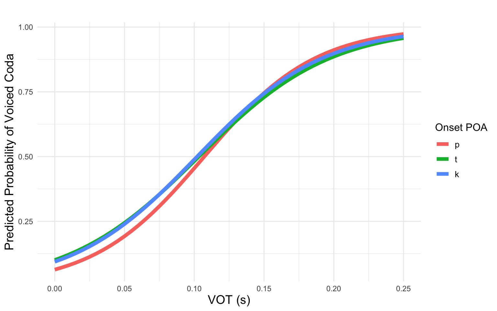
ggsave("vc_pred.png", plot = vc_pred, bg = "white", width = 7, height = 4, dpi = 300)Bayesian mixed-effects model of VOT ~ coda voicing
Reference level for ons_poa is /p/, set
once in the data preparation section above.
# Confirm reference level / contrast coding before fitting
contrasts(data_mod$ons_poa)## t k
## p 0 0
## t 1 0
## k 0 1get_prior(vot ~ ons_poa * coda_vc + (1 | sub), data = data_mod, family = gaussian())## prior class coef group resp dpar nlpar lb ub
## (flat) b
## (flat) b coda_vc1
## (flat) b ons_poak
## (flat) b ons_poak:coda_vc1
## (flat) b ons_poat
## (flat) b ons_poat:coda_vc1
## student_t(3, 0.1, 2.5) Intercept
## student_t(3, 0, 2.5) sd 0
## student_t(3, 0, 2.5) sd sub 0
## student_t(3, 0, 2.5) sd Intercept sub 0
## student_t(3, 0, 2.5) sigma 0
## tag source
## default
## (vectorized)
## (vectorized)
## (vectorized)
## (vectorized)
## (vectorized)
## default
## default
## (vectorized)
## (vectorized)
## defaultDefault (weakly informative) prior model
bayes_model_default <- brm(
vot ~ ons_poa * coda_vc + (1 | sub),
data = data_mod,
family = gaussian(),
chains = 4,
iter = 2000,
cores = 4,
seed = 123
)summary(bayes_model_default)## Family: gaussian
## Links: mu = identity
## Formula: vot ~ ons_poa * coda_vc + (1 | sub)
## Data: data_mod (Number of observations: 2369)
## Draws: 4 chains, each with iter = 2000; warmup = 1000; thin = 1;
## total post-warmup draws = 4000
##
## Multilevel Hyperparameters:
## ~sub (Number of levels: 20)
## Estimate Est.Error l-95% CI u-95% CI Rhat Bulk_ESS Tail_ESS
## sd(Intercept) 0.03 0.00 0.02 0.04 1.01 377 641
##
## Regression Coefficients:
## Estimate Est.Error l-95% CI u-95% CI Rhat Bulk_ESS Tail_ESS
## Intercept 0.08 0.01 0.07 0.09 1.01 291 386
## ons_poat 0.01 0.00 0.01 0.01 1.00 3162 3229
## ons_poak 0.01 0.00 0.01 0.02 1.00 2516 3045
## coda_vc1 0.01 0.00 0.01 0.01 1.00 2011 2717
## ons_poat:coda_vc1 -0.00 0.00 -0.01 -0.00 1.00 1993 2700
## ons_poak:coda_vc1 -0.00 0.00 -0.01 -0.00 1.00 1912 2688
##
## Further Distributional Parameters:
## Estimate Est.Error l-95% CI u-95% CI Rhat Bulk_ESS Tail_ESS
## sigma 0.02 0.00 0.02 0.02 1.00 1420 1820
##
## Draws were sampled using sampling(NUTS). For each parameter, Bulk_ESS
## and Tail_ESS are effective sample size measures, and Rhat is the potential
## scale reduction factor on split chains (at convergence, Rhat = 1).plot(bayes_model_default)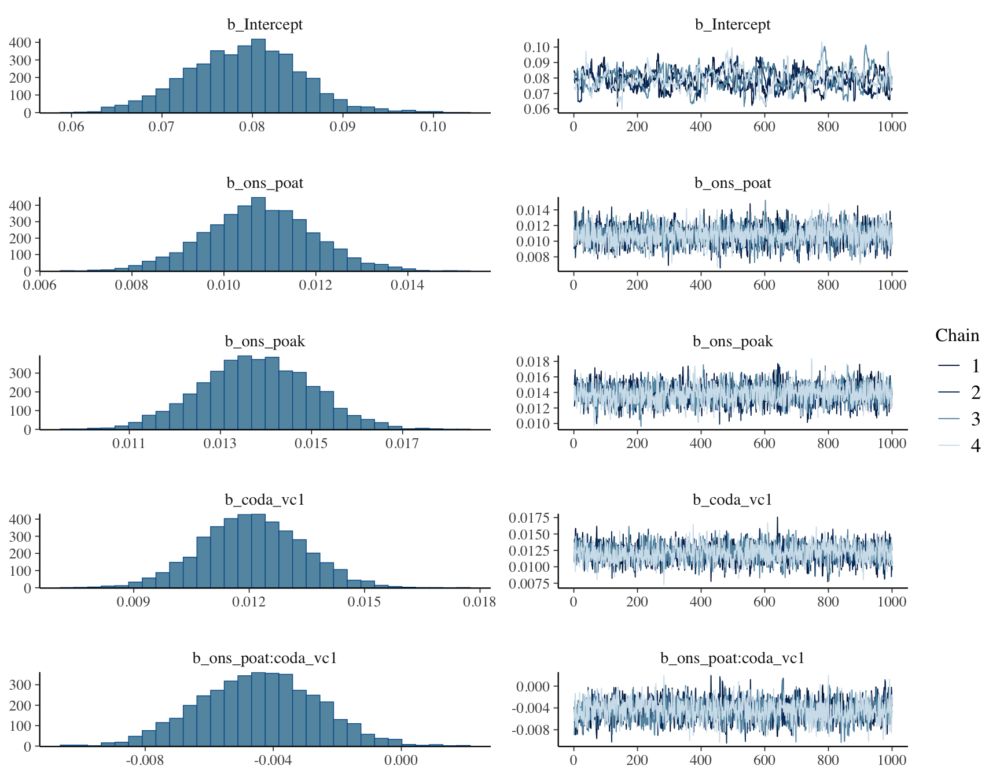
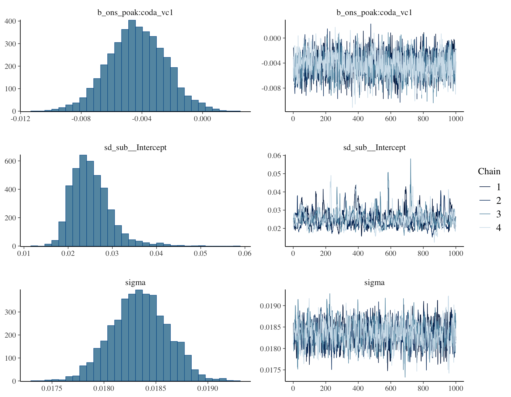
Informed prior model
Priors are split by epistemic status: place-of-articulation effects
are strongly informed by the established cross-linguistic VOT
literature, while the coda-voicing effect (the focal, untested
hypothesis) is given a weakly informative, zero-centered prior rather
than a value read off this dataset’s own lmer estimate
(~12ms), to avoid double-dipping / circularity.
informed_priors <- c(
# Strongly informed: established literature on POA and VOT
prior(normal(30, 10), class = Intercept), # /p/ baseline
prior(normal(15, 8), class = b, coef = ons_poat), # /t/ effect
prior(normal(30, 12), class = b, coef = ons_poak), # /k/ effect
# Weakly informed / regularizing: the focal, untested hypothesis
prior(normal(0, 20), class = b, coef = "coda_vc1"),
prior(normal(0, 15), class = b, coef = "ons_poat:coda_vc1"),
prior(normal(0, 15), class = b, coef = "ons_poak:coda_vc1"),
# Standard weakly informative priors for variance components
prior(normal(0, 20), class = sd),
prior(normal(0, 25), class = sigma)
)bayes_model_informed <- brm(
vot ~ ons_poa * coda_vc + (1 | sub),
data = data_mod,
family = gaussian(),
prior = informed_priors,
chains = 4,
iter = 2000,
cores = 4,
seed = 123
)prior_summary(bayes_model_informed)## prior class coef group resp dpar nlpar lb ub tag
## (flat) b
## normal(0, 20) b coda_vc1
## normal(30, 12) b ons_poak
## normal(0, 15) b ons_poak:coda_vc1
## normal(15, 8) b ons_poat
## normal(0, 15) b ons_poat:coda_vc1
## normal(30, 10) Intercept
## normal(0, 20) sd 0
## normal(0, 20) sd sub 0
## normal(0, 20) sd Intercept sub 0
## normal(0, 25) sigma 0
## source
## default
## user
## user
## user
## user
## user
## user
## user
## (vectorized)
## (vectorized)
## usersummary(bayes_model_informed)## Family: gaussian
## Links: mu = identity
## Formula: vot ~ ons_poa * coda_vc + (1 | sub)
## Data: data_mod (Number of observations: 2369)
## Draws: 4 chains, each with iter = 2000; warmup = 1000; thin = 1;
## total post-warmup draws = 4000
##
## Multilevel Hyperparameters:
## ~sub (Number of levels: 20)
## Estimate Est.Error l-95% CI u-95% CI Rhat Bulk_ESS Tail_ESS
## sd(Intercept) 0.02 0.00 0.02 0.03 1.01 406 657
##
## Regression Coefficients:
## Estimate Est.Error l-95% CI u-95% CI Rhat Bulk_ESS Tail_ESS
## Intercept 0.08 0.01 0.07 0.09 1.02 241 340
## ons_poat 0.01 0.00 0.01 0.01 1.00 2902 3120
## ons_poak 0.01 0.00 0.01 0.02 1.00 2222 2958
## coda_vc1 0.01 0.00 0.01 0.01 1.00 1814 2159
## ons_poat:coda_vc1 -0.00 0.00 -0.01 -0.00 1.00 2041 2034
## ons_poak:coda_vc1 -0.00 0.00 -0.01 -0.00 1.00 1716 2377
##
## Further Distributional Parameters:
## Estimate Est.Error l-95% CI u-95% CI Rhat Bulk_ESS Tail_ESS
## sigma 0.02 0.00 0.02 0.02 1.00 1323 1738
##
## Draws were sampled using sampling(NUTS). For each parameter, Bulk_ESS
## and Tail_ESS are effective sample size measures, and Rhat is the potential
## scale reduction factor on split chains (at convergence, Rhat = 1).pp_check(bayes_model_informed, type = "hist", ndraws = 100) +
ggtitle("Prior Predictive Check: Do simulated VOTs look reasonable?")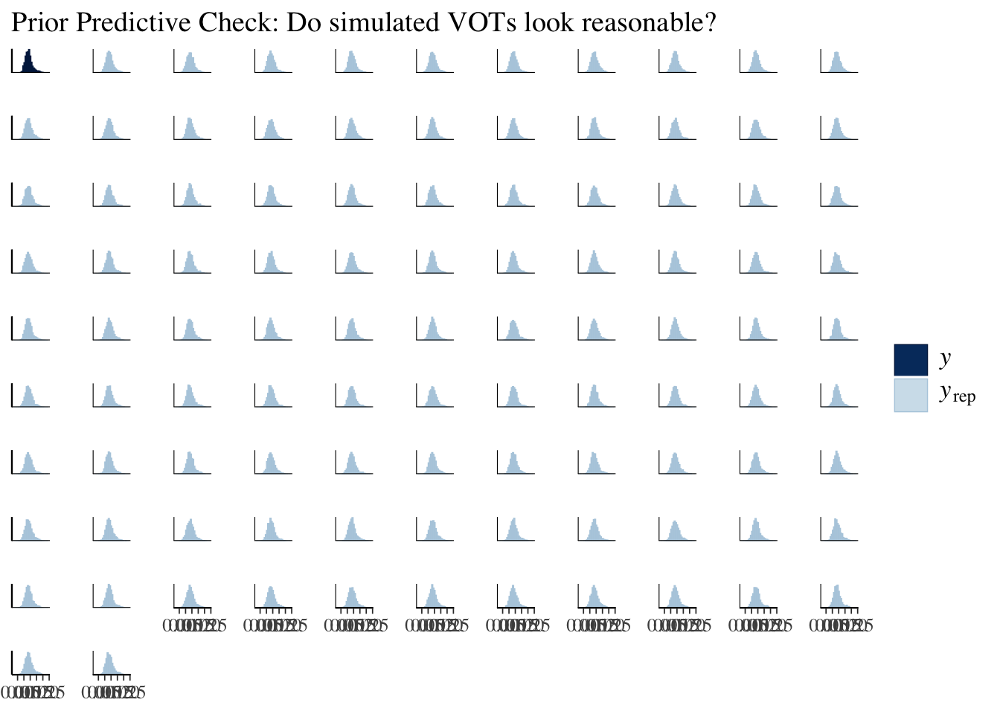
Model comparison
loo_default <- loo(bayes_model_default)
loo_informed <- loo(bayes_model_informed)
loo_compare(loo_default, loo_informed)## model elpd_diff se_diff p_worse diag_diff diag_elpd
## bayes_model_default 0.0 0.0 NA
## bayes_model_informed -0.3 0.1 1.00 |elpd_diff| < 4Direct posterior comparison for the focal coefficient, now directly
comparable since both models share the /p/ reference
level:
posterior_summary(bayes_model_default, variable = "b_coda_vc1")## Estimate Est.Error Q2.5 Q97.5
## b_coda_vc1 0.01206089 0.001315883 0.009507995 0.01464231posterior_summary(bayes_model_informed, variable = "b_coda_vc1")## Estimate Est.Error Q2.5 Q97.5
## b_coda_vc1 0.01205801 0.001325356 0.009392996 0.01466453Ridge plots with posterior predictions
Ridge plots with posterior predictions overlaid, for both Bayesian
models, on the shared /p/ reference level.
data_mod$poa_coda <- factor(
interaction(data_mod$coda_vc, data_mod$ons_poa),
levels = c("0.p", "1.p", "0.t", "1.t", "0.k", "1.k")
)
data_mod$coda_vc_factor <- factor(
data_mod$coda_vc,
levels = c("1", "0"),
labels = c("Voiced", "Voiceless")
)
make_ridge_plot <- function(model, plot_title = "") {
newdata <- expand_grid(
ons_poa = c("p", "t", "k"),
coda_vc = c("0", "1")
)
newdata$ons_poa <- factor(newdata$ons_poa, levels = levels(data_mod$ons_poa))
newdata$coda_vc <- factor(newdata$coda_vc, levels = levels(data_mod$coda_vc))
preds <- posterior_epred(model, newdata = newdata,
allow_new_levels = TRUE, re_formula = NA)
pred_summary <- newdata %>%
mutate(
estimate = apply(preds, 2, mean),
lower = apply(preds, 2, quantile, 0.025),
upper = apply(preds, 2, quantile, 0.975)
)
pred_summary$poa_coda <- factor(
interaction(pred_summary$coda_vc, pred_summary$ons_poa),
levels = c("0.p", "1.p", "0.t", "1.t", "0.k", "1.k")
)
ggplot() +
geom_density_ridges(
data = data_mod,
aes(x = vot, y = poa_coda, fill = poa_coda, linetype = coda_vc_factor),
alpha = 0.8, scale = 0.8
) +
scale_linetype_manual(
name = "Coda voicing",
values = c("Voiceless" = "dashed", "Voiced" = "solid")
) +
geom_point(
data = pred_summary,
aes(x = estimate, y = poa_coda, color = poa_coda),
size = 3, position = position_nudge(y = 0.2)
) +
geom_errorbarh(
data = pred_summary,
aes(x = estimate, y = poa_coda, xmin = lower, xmax = upper, color = poa_coda),
height = 0.1, position = position_nudge(y = 0.2)
) +
scale_fill_manual(values = c(
"0.p" = "#B71C1C", "1.p" = "#FFCDD2",
"0.t" = "#1B5E20", "1.t" = "#C8E6C9",
"0.k" = "#0D47A1", "1.k" = "#BBDEFB"
)) +
scale_color_manual(values = c(
"0.p" = "#67000D", "1.p" = "#A50F15",
"0.t" = "#00441B", "1.t" = "#006D2C",
"0.k" = "#08306B", "1.k" = "#08519C"
)) +
annotate("text", x = 0.01, y = 1.5, label = "p\u02b0", hjust = 1.2, vjust = 0.5,
size = 4, fontface = "bold") +
annotate("text", x = 0.01, y = 3.5, label = "t\u02b0", hjust = 1.2, vjust = 0.5,
size = 4, fontface = "bold") +
annotate("text", x = 0.01, y = 5.5, label = "k\u02b0", hjust = 1.2, vjust = 0.5,
size = 4, fontface = "bold") +
labs(x = "VOT (s)", y = "", title = plot_title) +
xlim(0, 0.2) +
coord_cartesian(ylim = c(0.5, 6.5)) +
theme_minimal() +
guides(fill = "none", color = "none",
linetype = guide_legend(title = "Coda voicing", direction = "vertical")) +
theme(
axis.text.y = element_blank(),
axis.ticks.y = element_blank(),
legend.position = c(0.85, 0.20),
legend.background = element_rect(fill = "white", color = "black", linewidth = 0.3),
panel.grid.major.y = element_blank(),
panel.grid.minor.y = element_blank(),
plot.margin = margin(t = 15, r = 5, b = 0, l = 5, unit = "pt")
) +
scale_y_discrete(expand = expansion(mult = c(0.05, 0.15)))
}Default-prior model
p_default <- make_ridge_plot(bayes_model_default, plot_title = "Default priors")
print(p_default)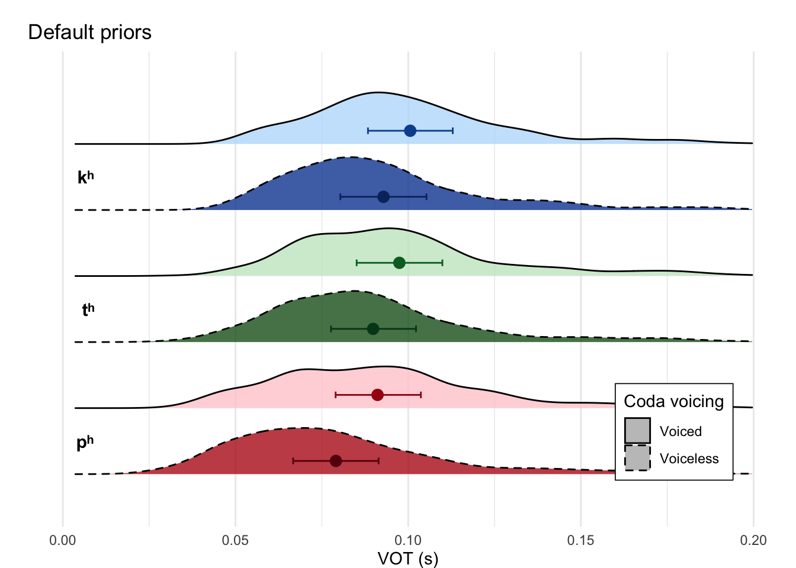
ggsave("ridge_default.png", plot = p_default, bg = "white", width = 7, height = 5, dpi = 300)Informed-prior model
p_informed <- make_ridge_plot(bayes_model_informed, plot_title = "Informed priors")
print(p_informed)ggsave("ridge_informed.png", plot = p_informed, bg = "white", width = 7, height = 5, dpi = 300)